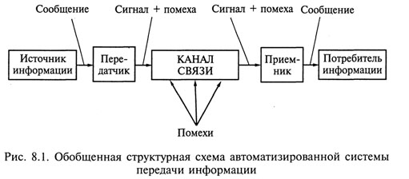
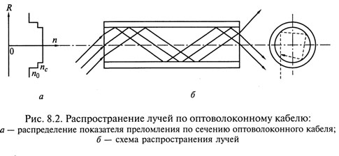
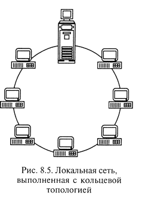
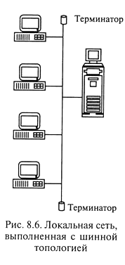
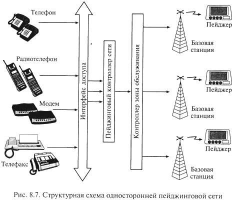
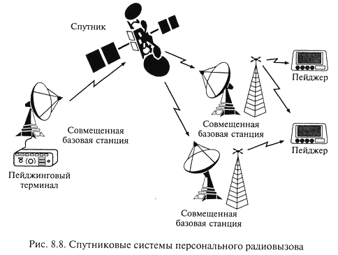
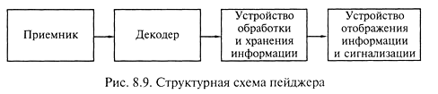
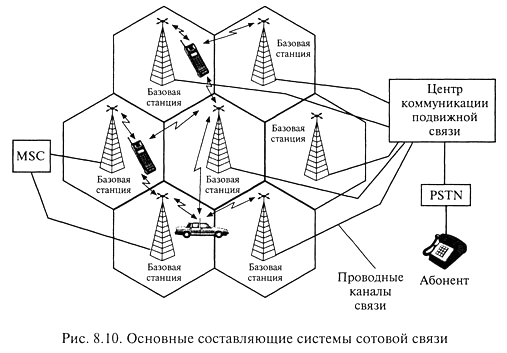
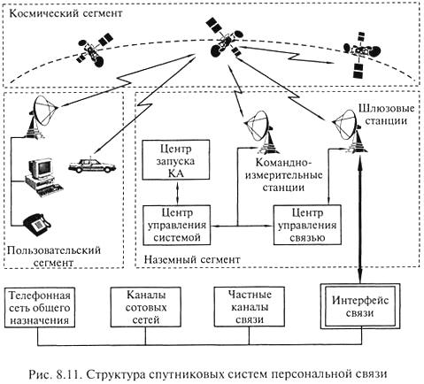
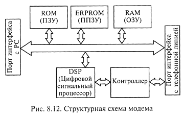

В условиях постоянного роста информационных потоков практически невозможно взаимодействие фирм, банковских структур, государственных предприятий и организаций без современных технических средств дистанционной передачи информации. Электронные коммуникации приобретают в современном мире все большее значение.
Система передачи информации — совокупность средств, служащих для передачи информации. В автоматизированных системах обработки информации и управления используются системы автоматизированной передачи информации — системы административно-управленческой связи.
На рис. 8.1 представлена обобщенная структурная схема автоматизированной системы передачи информации. 
Источник и потребитель информации, в качестве которых могут быть ЭВМ, системы хранения информации, различного рода датчики и исполнительные устройства, а также отдельные пользователи, являются абонентами системы передачи.
Передатчик преобразует поступающие от абонента сообщения в сигнал, передаваемый по каналу связи.
Приемник выполняет обратное преобразование сигнала в сообщение, поступающее абоненту.
При передаче информации по каналам связи на сигнал воздействует ряд помех, что может привести к несоответствию между передаваемым и получаемым сообщениями, т. е. к недостоверной передаче информации.
Важнейшим параметром качества системы передачи информации является ее пропускная способность.
Пропускная способность системы передачи информации - наибольшее теоретически достижимое количество информации, которое может быть передано по системе за единицу времени. Пропускная способность системы связана со скоростью преобразования информации в передатчике и приемнике и допустимой скоростью передачи информации по каналу связи, зависящей от физических свойств канала связи и сигнала.
Скорость передачи дискретной информации по каналу связи измеряется в бодах. Один
бод - это скорость передачи одного бита в секунду:
1 бод = 1 бит/с. Соответственно 1 Кбод= 103 бит/с; 1 Мбод=106бит/с.
Каналы связи (КС) служат для передачи сигнала и являются общим звеном любой системы передачи информации.
По физической природе каналы связи подразделяются на механические, используемые для передачи материальных носителей информации, акустические, оптические и электрические, передающие соответственно звуковые, световые и электрические сигналы.
Электрические и оптические каналы связи в зависимости от способа передачи сигналов можно подразделить на проводные, использующие для передачи сигналов физические проводники (электрические провода, кабели, световоды), и беспроводные, использующие для передачи сигналов электромагнитные волны (радиоканалы, инфракрасные каналы).
По форме представления передаваемой информации каналы связи делятся на аналоговые, по которым информация передается в непрерывной форме, т.е. в виде непрерывного ряда значений какой-либо физической величины, и цифровые, передающие информацию, представленную в виде цифровых (дискретных, импульсных) сигналов различной физической природы.
В зависимости от возможных направлений передачи информации каналы связи подразделяются на симплексные, позволяющие передавать информацию только в одном направлении; полудуплексные, обеспечивающие попеременную передачу информации как в прямом, так и в обратном направлениях; дуплексные, позволяющие вести передачу информации одновременно в прямом и обратном направлениях.
Каналы связи бывают коммутируемые, которые создаются из отдельных участков (сегментов) только на время передачи по ним информации, а по окончании передачи такой канал ликвидируется (разъединяется), и некоммутируемые (выделенные), создаваемые на длительное время и имеющие постоянные характеристики по длине, пропускной способности, помехозащищенности.
Широко используемые в автоматизированных системах обработки информации и управления электрические проводные каналы связи различаются по пропускной способности:
Для передачи информации в низкоскоростных и среднескоростных КС физической средой обычно являются проводные линии связи: группы либо параллельных, либо скрученных проводов, называемых витая пара. Она представляет собой изолированные проводники, попарно свитые между собой для уменьшения как перекрестных электромагнитных наводок, так и затухания сигнала при передаче на высоких частотах.
Для организации высокоскоростных (широкополосных) КС используются различные кабели:
UTR-кабели (неэкранированные с витыми парами из медных проводов) довольно широко используются в системах передачи данных, в частности в вычислительных сетях.
Выделяют пять категорий витых пар: первая и вторая категории используются при низкоскоростной передаче данных; третья, четвертая и пятая — при скоростях передачи соответственно до 16,25 и 155 Мбит/с. Эти кабели обладают хорошими техническими характеристиками, сравнительно недороги, удобны в работе, не требуют заземления.
Коаксиальный кабель представляет собой медный проводник, покрытый диэлектриком и окруженный свитой из тонких медных проводников экранирующей защитной оболочкой. Скорость передачи данных по коаксиальному кабелю довольно высокая (до 300 Мбит/с), но он недостаточно удобен в работе и имеет высокую стоимость.
Оптоволоконный кабель (рис. 8.2) состоит из стеклянных или пластиковых волокон диаметром несколько микрометров (свето-ведущая жила) с высоким показателем преломления nc, окруженных изоляцией с низким показателем преломления n0 и помещенных в защитную полиэтиленовую оболочку. На рис. 8.2.а показано распределение показателя преломления по сечению оптоволоконного кабеля, а на рис. 8.2.б - схема распространения лучей. Источником излучения, распространяемого по оптоволоконному кабелю, является светодиод или полупроводниковый лазер, приемником излучения - фотодиод, который преобразует световые сигналы в электрические. Передача светового луча по волокну основана на принципе полного внутреннего отражения луча от стенок световедущей жилы, за счет чего обеспечивается минимальное затухание сигнала. Кроме того, оптоволоконные кабели обеспечивают защиту передаваемой информации от внешних электромагнитных полей и высокую скорость передачи до 1000 Мбит/с. Кодирование информации осуществляется с помощью аналоговой, цифровой или импульсной модуляции светового луча. Оптоволоконный кабель достаточно дорогой и используется обычно лишь для прокладки ответственных магистральных каналов связи, например, проложенный по дну Атлантического океана кабель связывает Европу с Америкой. В вычислительных сетях оптоволоконный кабель используется на наиболее ответственных участках, в частности, в Internet. По одному толстому магистральному оптоволоконному кабелю можно одновременно организовать несколько сотен тысяч телефонных, несколько тысяч видеотелефонных и около тысячи телевизионных каналов связи.
Для просмотра фильма "Как это сделано: оптоволокно (Discovery Chanel)" нажмите кнопку ВОСПРОИЗВЕДЕНИЕ.
Высокоскоростные КС организуются на базе беспроводных радиоканалов.
Радиоканал — это беспроводный канал связи, прокладываемый через эфир. Для формирования радиоканала используются радиопередатчик и радиоприемник. Скорости передачи данных по радиоканалу практически ограничиваются полосой пропускания приемопередающей аппаратуры. Радиоволновый диапазон определяется используемой для передачи данных частотной полосой электромагнитного спектра. В табл. 8.1 представлены диапазоны радиоволн и соответствующие им частотные полосы.
Таблица 8.1 Диапазоны радиоволн и соответствующие им частотные полосы
|
Для коммерческих телекоммуникационных систем чаще всего используются частотные диапазоны 902—928 МГц и 2,40—2,48 ГГц.
Беспроводные каналы связи обладают плохой помехозащищенностью, но обеспечивают пользователю максимальную мобильность и быстроту реакции.
Телефонные линии связи наиболее разветвлены и распространены. Они осуществляют передачу звуковых (тональных) и факсимильных сообщений. На базе телефонной линии связи построены информационно-справочные системы, системы электронной почты и вычислительных сетей. На базе телефонных линий могут быть созданы аналоговые и цифровые каналы передачи информации.
В аналоговых телефонных линиях телефонный микрофон преобразует звуковые колебания в аналоговый электрический сигнал, который и передается по абонентской линии в АТС. Требуемая для передачи человеческого голоса полоса частот составляет примерно 3 кГц (диапазон 300 Гц—3,3 кГц). Передача сигналов вызова производится по тому же каналу, что и передача речи.
В цифровых каналах связи аналоговый сигнал перед вводом дискретизируется — преобразуется в цифровую форму: каждые 125 мкс (частота дискретизации равна 8 кГц) текущее значение аналогового сигнала отображается 8-разрядным двоичным кодом. Скорость передачи данных по базовому каналу 64 Кбит/с. Для создания более скоростных каналов несколько каналов объединяют в один — мультиплексируют. Мультиплексирующие, например, 32 базовых канала обеспечивают пропускную способность 2048 Кбит/с. Цифровые каналы — базовые или мультиплексированные — используются повсеместно в современных магистральных системах, а также для подсоединения к ним офисных цифровых АТС.
В последние годы стал развиваться и цифровой абонентский доступ, при котором дискретизация звукового сигнала выполняется уже в абонентской телефонной системе, содержащей интерфейсный цифровой адаптер.
Наиболее развивающейся является международная цифровая сеть с интеграцией услуг Integrated Serviced Digital Network (ISDN), использующая цифровые абонентские каналы. Скорости передачи данных, реализуемые сетью: 64 Кбит/с, 128 Кбит/с, 2 Мбит/с.
Сеть ISDN должна стать глобальной цифровой магистралью, соединяющей как офисные, так и домашние компьютеры, предоставляя их владельцам высокоскоростную передачу данных и объединяя в единое целое различные виды связи (видео-, аудио-передачу данных), чтобы одновременно беседовать по видеотелефону и во время разговора выводить на экран компьютеров различную информацию.
Основными преимуществами цифровых коммуникаций по сравнению с аналоговыми являются надежность, целостность каналов связи, возможность эффективнее внедрять механизмы защиты данных, основанные на их шифровании.
Локальная сеть (Local Area Network LAN) представляет собой соединение нескольких ПК с помощью соответствующего аппаратного и программного обеспечения. Под термином «локальная» подразумевается, что все объединенные сетью ПК дистанцированы на небольшое расстояние, т.е. находятся, как правило, в одном или в соседних зданиях.
Компьютер может работать в составе любой сети — от городской (Metropolitan Area Network) до глобальной (Global Area Network), однако типичной областью его применения является именно локальная сеть. ПК имеет возможности для подключения в сеть благодаря его открытой архитектуре.
Формирование локальной сети из нескольких компьютеров при работе с информационными потоками дает следующие преимущества:
Функционирование сети, включающей несколько сотен рабочих мест, обычно обеспечивает специалист, которого называют сетевым администратором или супервизором.
Как правило, в сети циркулирует большой объем данных, поэтому необходимо тщательно и планомерно заботиться о защите информации. Для защиты информации в сети используются:
Компонентами локальной сети являются обычные ПК, подключенные в сеть с помощью карты расширения. Среди ПК, объединенных в сеть, выделяется файловый сервер (или просто сервер) - центральный компьютер всей сети, с которым связаны все остальные, называемые рабочими станциями. В качестве файлового сервера используется достаточно мощный ПК с развитой периферией.
Рабочие станции подключаются в сеть с помощью сетевой карты, устанавливаемой в один из свободных слотов материнской платы и служащей для передачи данных по системе шин к CPU и RAM сервера или рабочей станции. Сетевая карта оснащена собственным процессором и памятью объемом 8... 16 Кбайт. Сетевые карты бывают 8-, 16- и 32-разрядными и могут иметь исполнение для различных компьютерных архитектур: ISA, EISA, VEsA, PCI, MCA.
Топология сети - способ соединения компьютеров в сети; определяет ее конфигурацию, быстродействие и сервисные возможности. ПК - ПК (псевдосеть) - соединение двух ПК через последовательный интерфейс. В этом случае кроме интерфейсов необходим только кабель, соединяющий ПК, называемый кабелем-нуль-модемом, поскольку связь между двумя ПК осуществляется без использования модема. Существенное преимущество последовательного интерфейса - кабель для передачи данных может иметь длину более 100 м, что позволяет соединить два ПК, находящиеся на разных этажах. Такая передача данных оправдана при работе с компьютером типа Notebook, когда необходимо регулярно передавать данные на основном ПК. Существенный недостаток соединения двух компьютеров в псевдосеть в том, что, когда один ПК передает, другой компьютер только принимает эти данные и в другом режиме не функционирует, поскольку заблокирован. Для непрерывной передачи данных такая конфигурация не рекомендуется.
Одноранговая сеть (Peer-to-Peer), принцип формирования которой представлен на рис. 8.3, не имеет центрального компьютера и работает без резервирования файлов. Некоторые технические средства информатизации: аппаратные средства (винчестеры, приводы CD-ROM) и периферийные устройства (сканеры, принтеры и др.), подключенные к отдельным ПК, используются совместно на всех рабочих местах. Каждый пользователь одноранговой сети может определить право доступа другим пользователям к информации на своем ПК. Для формирования одноранговой сети каждый ПК должен быть оснащен сетевой картой, а все рабочие места должны соединяться между собой. Рекомендуется соединять одноранговой сетью не более десяти ПК.
Сеть типа клиент — сервер содержит в центре мощный ПК - файловый сервер, соединенный с отдельными рабочими станциями (клиентами). Управление сетью, в смысле управления отдельными рабочими станциями, а также контроль за периферийными устройствами сети осуществляется специальным мощным сетевым программным обеспечением. Сеть типа клиент — сервер может быть выполнена с различной топологией.
В сети с топологией «звезда» файловый сервер располагается в центре, как показано на рис. 8.4. Сеть такого типа имеет следующие преимущества: повреждение кабеля одного ПК не сказывается на работе всей сети; подключение не представляет сложности, поскольку рабочая станция должна соединяться только с сервером; надежный механизм защиты от несанкционированного доступа; высокая скорость передачи данных от рабочей станции к серверу. Недостатки: невысокая скорость передачи информации между рабочими станциями, значительно меньшая, чем от рабочей станции к серверу и обратно; зависимость мощности всей сети от возможностей сервера; невозможность коммуникации между отдельными рабочими станциями, минуя сервер.

В случае кольцевой топологии все рабочие станции и сервер соединены между собой по кольцу, по которому посылаются данные и адрес получателя (рис. 8.5). Достоинства кольцевой топологии: существенное сокращение времени доступа к данным; отсутствие ограничений на длину сети. Недостатки: выход из строя одной рабочей станции может привести к отказу всей сети, если не используются специальные переходные соединения; подключение новых рабочих станций требует отключения всей сети.
Шинная топология сети (рис. 8.6) предполагает наличие центральной линии, к которой подключены сервер и отдельные рабочие станции. Шинная топология широко распространена благодаря малому расходу кабеля, высокой скорости передачи данных; возможности подключения и отключения рабочих станций без прерывания работы всей сети; возможности коммутации между собой рабочих станций без помощи сервера. Для исключения затухания электрического информационного сигнала вследствие переотражений в линии связи такой сети на концах линии устанавливаются специальные заглушки, называемые терминаторами. Недостатки шинной топологии: обрыв кабеля приводит к выводу из строя всего участка сети от места разрыва. Кроме того, имеется возможность несанкционированного подключения к сети, поскольку для увеличения числа рабочих станций нет необходимости прерывания работы сети.
Сетевые программные средства служат как для программного обеспечения сети, так и для управления потоком данных. Существует много систем, обеспечивающих решение этой задачи.
Средства организации одноранговых сетей включены в состав Windows for Workgroups 3.11 и Windows 95/98/NT фирмы Microsoft. Для организации сетей с выделенным сервером используются операционные системы Novell NETWARE версий 3.11, 3.12 и 4.1, отличающиеся высокой надежностью и скоростью работы. Однако в настоящее время все большее распространение получают такие операционные системы, как OS/2, WARP CONNECT и Microsoft Windows NT 4,0. Среди операционных систем для глобальных сетей безусловным лидером в настоящее время является UNIX.
В локальных сетях данные циркулируют по кабелям, соединяющим компьютеры различными способами в зависимости от выбранной топологии (Ethernet, Arcent, Token Ring). Эти сети наиболее часто используются в мире, различаясь методами доступа к каналам передачи данных. В России наибольшее распространение получил Ethernet, первая версия которого была разработана в середине 1970-х гг. фирмой Xerox.
Для Ethernet используются различные виды кабелей, например, 8-жильный кабель, состоящий из четырех витых пар.
На коаксильном кабеле возможны два варианта реализации Ethernet: так называемый Ethernet на тонком кабеле (диаметр 0,2") и Ethernet на толстом кабеле (диаметр 0,4"). По показателям защиты от электромагнитного излучения толстый кабель предпочтительнее тонкого, но отличается высокой стоимостью.
Оптоволоконный кабель не подвержен влиянию электромагнитных полей, обладает высокой скоростью передачи, но высокой стоимостью, что не способствует широкому распространению этого способа коммутации.
Создание сети на аппаратном уровне производится соединением компонентов сети кабелем в соответствии с выбранной топологией.
При построении сети на тонком кабеле на его концы устанавливают так называемые BNC-коннекторы (разъемы), с помощью которых кабель подсоединяется к Т-коннектору, связанному с внешним разъемом сетевой платы. Т-коннекторы поставляются с сетевыми платами, а BNC-коннекторы приобретаются отдельно.
При создании сети на толстом кабеле используется дополнительное устройство, называемое трансивером. Трансивер служит для подключения к сетевому кабелю рабочих станций, каждая из которых имеет специальный трансиверный кабель, подключаемый к трансиверу и к сетевой плате компьютера. Создание сети при помощи трансивера достаточно удобно, поскольку трансивер может быть установлен в любом месте кабеля. Однако трансиверы довольно дороги, и их необходимо приобретать дополнительно.
Ethernet на витой паре допускает соединение компьютеров на скорости до 100 Мбит. При таком построении сети необходимо специальное устройство хаб (Hab - накопитель, концентратор). Хаб является важным устройством сети на витой паре. Каждый компьютер подключается к нему сегментом кабеля, а сам хаб - к сети электропитания. Необходимо приобретать хаб с числом портов, равным числу компьютеров в сети.
Пейджер (от англ, to page — вызывать, выкликать) — приемно-передающее устройство персонального радиовызова.
Пейджинговая связь появилась в середине 1950-х гг. и воспринималась неоднозначно, поскольку наряду с высокой оперативностью и низкой стоимостью она до сих пор еще является в основном односторонним видом связи. В 1990-х гг. на фоне стремительного развития сотовой связи ожидалось снижение популярности пейджинговой связи. Однако этого не произошло, поскольку были разработаны высокоскоростные протоколы обмена и появились системы двухсторонней связи. По данным на 2001 г. в развитых странах пейджинговой связью пользовалось до 20 % населения; во всем мире насчитывалось 110 млн абонентов, причем за ближайшие три года ожидается увеличение этого числа до 200 млн. 
Пейджинговые сети связи организованы по радиальному и сотовому принципам, могут быть односторонними и двухсторонними.
Односторонние пейджинговые сети имеют широкое применение, поскольку предполагают сплошное перекрытие всей зоны обслуживания. На рис. 8.7 приведена структурная схема односторонней пейджинговой сети.
Основой пейджинговой сети является пейджинговый терминал: приемно-передающее устройство с контроллером, ретранслятором, пультом управления и антенной. На пейджинговый контроллер сети информация поступает через интерфейс доступа, который является системой сбора и обработки поступающей информации и в общем случае включает в себя локальные рабочие места операторов, соединенные с коммутационным сервером сети. Для передачи информации могут использоваться телефон, радиотелефон, телефакс, модем. Некоторые пейджинговые компании предоставляют возможность передавать сообщения на пейджер непосредственно с персонального компьютера по электронной почте (e-mail) или через Internet. Для приема информации используется миниатюрный УКВ-приемник — пейджер, работающий в диапазоне частот 146—174 МГц.
Современный уровень телекоммутационной техники позволяет построить пейджинговую сеть любого размера: от офисной до общегосударственной. Наиболее характерны три вида этих систем: корпоративные, локальные и региональные.
Ведомственные, или локальные, пейджинговые сети используются в рамках какого-либо предприятия (вокзалы, аэропорты), имеют радиус действия до пяти километров, ограниченное количество абонентов и построены по радиальному принципу.
Городские пейджинговые сети отличаются радиусом действия в десятки километров и охватывают несколько тысяч абонентов.
Региональные пейджинговые сети охватывают еще большую территорию, и поэтому при их создании используется такой же принцип, как и в радиотелефонной сотовой сети. Такие системы имеют наиболее развитые функциональные и сервисные возможности.
Двухсторонние пейджинговые сети позволяют не только посылать сообщения, но и получать ответ на них. Они используются также для обмена информацией между абонентом и оператором сети, между двумя абонентами. Пейджер для двухсторонней связи отличается от обычного наличием маломощного передатчика. Владелец двухстороннего пейджера имеет возможность принимать сообщения длиной до 500 символов и посылать ответные сообщения длиной до 150 символов. Пейджеры нового поколения имеют возможность при помощи Internet принимать и посылать сообщения, передаваемые по электронной почте.
Спутниковые системы персонального радиовызова — глобальные системы оповещения с доставкой кодированных сообщений абонентам в любую точку земного шара (рис. 8.8). Первая спутниковая система одностороннего персонального радиовызова SkyTel, разработанная в 1995 г., предназначена дая передачи сообщений мобильным пользователям от абонентов наземных телефонных сетей общего пользования. Спутниковая система персонального радиовызова ориентирована на следующие группы пользователей: суда и коммерческие самолеты, находящиеся вне зоны действия наземных служб передачи данных; организации, обеспечивающие добычу энергоносителей и различных природных ресурсов в отдаленных регионах; геологов и путешественников. 
Уже введена в строй Единая пейджинговая система России, которая позволит в ближайшем будущем создать на территории страны единое информационное пространство. Отличительной особенностью системы является возможность создания во всех областных и крупных промышленных центрах России локальных сетей пейджинговой связи, использующих единый стандарт, совместимый со стандартами сотовых радиотелефонных сетей.
Пейджинговые стандарты кодирования информации — это набор технических характеристик функций пейджеров, значений скорости передачи, протоколов, параметров связи. Под протоколом понимается совокупность правил, регламентирующих форматы и процедуры обмена информацией.
Первым пейджинговым стандартом, на котором основан односторонний протокол обмена, был TWO TONES (два тона), основанный на посылке сигнала в виде комбинации двух частот. Этот стандарт обеспечивал короткую звуковую сигнализацию вызова и позволял обслужить только небольшое количество абонентов.
В большинстве российских пейджинговых систем используется международный стандарт POCSAG (Post Office Code Standartisation Advisory Group). Этот стандарт обеспечивает обслуживание до 2 млн абонентов и позволяет передавать как тональные, так и текстовые кодированные сообщения и используется более чем в 80 % сетей всего мира. Скорость передачи информации 512, 1200 и 2400 бит/с. Благодаря широкому применению стандарта, легко решаются вопросы роуминга.
Роуминг — режим работы, при котором информация, адресованная абонентам некоторой пейджинговой сети, может поступать к ним в различных городах, поскольку разные компании-операторы без особых проблем могут передавать и переадресовывать клиентов друг другу.
В настоящее время в России рассматриваются возможности построения систем персонального радиовызова на основе общеевропейского пейджингового стандарта ERMES. Основное достоинство стандарта ERMES в том, что он полностью совместим с европейским стандартом GSM сотовой радиосвязи.
В отдельных пейджинговых компаниях внедряется высокоскоростной стандарт FLEX(Flexibility — гибкий), который позволяет одновременно обслуживать до 3,5 млрд абонентов в одной системе. Максимальная скорость передачи сообщений в одной системе 6400 бит/с, что значительно выше, чем в протоколе POPCSAG. В последнее время на основе стандарта FLEX создается семейство высокоскоростных протоколов ReFLEX и InFLEX. Протокол ReFLEX дает возможность двухсторонней передачи, т.е. совладелец пейджера может не только принимать сообщение, но и посылать подтверждение о его получении либо кратко отвечать с помощью заранее предусмотренного кода; максимальная скорость передачи в этом протоколе 25,6 Кбит/с. Протокол InFLEX отличается еще большей скоростью передачи — до 112 Кбит/с.
Стандарт Nexus разработан для двухсторонней пейджинговой связи и отличается тем, что при организации обратной связи с пейджера можно осуществлять побуквенный набор ответного сообщения.
Пейджеры в общем случае представляют собой миниатюрные УКВ-приемники, снабженные декодером, устройством обработки и хранения информации, устройством отображения информации и сигнализации. Структурная схема пейджера дана на рис. 8.9. Пейджеры подразделяются на тональные, цифровые и текстовые. 
Тональные и «голосовые» пейджеры — самые простые, дешевые и малогабаритные (размером со спичечный коробок), извещают абонента о вызове вибрационным, звуковым или световым сигналом. При этом тип оповещательного сигнала может условно кодировать одно из пятишести заранее выбранных абонентом сообщений: позвонить в голосовой почтовый ящик, позвонить в офис, позвонить домой и т.п. Тональные пейджеры применяются достаточно редко.
«Голосовые» пейджеры применяются в служебных сетях и позволяют после прохождения сигнала вызова прослушать речевое сообщение.
Цифровые пейджеры работают исключительно с цифровыми сигналами, имеют, как правило, дисплей и оперативную память. На ЖК-дисплей передается цифровое сообщение (номер телефона, по которому нужно позвонить; время некоторого заранее обусловленного события; курс акций и т.п.). Такой пейджер обычно используется совместно с голосовым почтовым ящиком (ГПЯ), организуемым практически в каждой пейджинговой системе. В этом случае на пейджер выдается только сообщение о наличии в ГПЯ информации в адрес абонента. Но содержание этой информации абонент может раскрыть для себя, позвонив в почтовый ящик с любого близлежащего телефона (доступ в ГПЯ конфиденциальный), — по идентификатору и/или паролю. Цифровые пейджеры работают в стандарте POCSAG.
Текстовые, или буквенно-цифровые, пейджеры пользуются наибольшей популярностью. Их модели весьма разнообразны. Информация отображается на многострочном жидкокристаллическом индикаторе (ЖКИ). Память содержит более 18 000 знаков. Сообщения выводятся как на русском, так и на английском языках. В качестве дополнительных функций текстовые пейджеры имеют часы, будильник, систему регистрации даты и времени поступления сообщения, обеспечивают просмотр и селективный выбор сообщений. Текстовый пейджер может служить записной книжкой, ежедневником с системой таймеров, оповещающих о времени намеченной встречи или телефонного звонка.
Сервисные услуги пейджинговой связи, получаемые пейджером, зависят от оператора, которым он обслуживается. Многие современные компании-операторы предоставляют следующие дополнительные услуги:
Первая система радиотелефонной связи, предлагавшая услуги всем желающим, начала функционировать в 1946 г. в США. Радиотелефоны, применявшиеся вначале в этой системе, использовали обычные фиксированные по частоте каналы связи. Если канал связи был занят, абонент переключался на другой — свободный. Впоследствии с развитием техники радиотелефонной связи свободный канал выбирался автоматически. Однако дальнейшее совершенствование систем радиотелефонной связи сдерживалось ограниченностью частотного ресурса, связанной с тем, что число фиксированных частот в определенном частотном диапазоне не может бесконечно увеличиваться: радиотелефоны с близкими по частоте рабочими каналами начинают создавать взаимные помехи.
Решение этой проблемы было найдено в середине 1940-х гг., когда исследовательским центром Bell Laboratories американской компании AT&T была предложена идея разбиения всей обслуживаемой территории на небольшие участки, которые назвали сотами (cell). Каждая сота должна была обслуживаться передатчиком с ограниченным радиусом действия и фиксированной частотой. Это позволило бы без всяких помех использовать ту же частоту повторно в другой ячейке (соте). На аппаратном уровне такой принцип организации связи был реализован только в начале 1990-х гг.
В 1990 г. в США был утвержден первый национальный стандарт цифровой сотовой связи, а в 1992 г. в Германии вступила в коммерческую эксплуатацию первая система цифровой сотовой связи стандарта GSM (Global System for Mobile Communication). В России в 1994 г. была принята концепция развития сетей сухопутной подвижной связи, инициировавшая развитие национальных сетей сотовой связи.
Главный принцип функционирования систем сотовой радиосвязи заключается в том, что система обслуживает территорию, разделенную на много небольших зон, каждая из которых обслуживается своим комплексом радиооборудования. Для разделения территории на зоны без перекрытия или пропусков участков наиболее оптимальной формой зоны является шестиугольник. Разделение территории на шестиугольные зоны, похожие на пчелиные сотовые ячейки, дало название радиотелефонной мобильной связи — сотовая. Границы соты определяются зоной устойчивой радиосвязи и зависят от мощности приемно-передающего радиоустройства, топологии местности и частотного диапазона работы системы. Чем выше полоса частот системы, тем меньше радиус соты, но тем лучше способность сигнала проникать через стены и другие препятствия и, что также важно, тем миниатюрнее радиоаппаратура и выше возможности организации большего количества абонентских радиоканалов. Современные сотовые системы работают на частотах 450, 800, 900 и 1800 МГц.
В состав оборудования системы сотовой связи входят базовые станции и центр коммутации, соединенные по выделенным проводным или радиорелейным каналам, как показано на рис. 8.10. 
Центр коммуникации — это автоматическая телефонная станция системы сотовой связи, обеспечивающая все функции управления сетью: слежение за подвижными абонентами, организация их эстафетной передачи, переключение рабочих каналов в соте при появлении помех, соединение абонента с абонентом обычной телефонной сети.
Базовая станция представляет собой многоканальный приемопередатчик, работающий в режиме приема и передачи сигнала и служащий своеобразным интерфейсом между сотовым телефоном и центром коммуникации подвижной связи.
Число каналов базовой станции обычно кратно 8: 8, 16, 32. Один из каналов является управляющим, или каналом вызова, поскольку именно на нем производится установление соединения при вызове подвижного абонента сети, однако разговор происходит после переключения на другой канал, свободный в данный момент. Сама идея сотовой сети мобильной связи заключается в том, что, еще не выйдя из зоны действия одной базовой станции, телефон и его владелец попадают в зону действия следующей, и так вплоть до наружной границы всей зоны покрытия сети. При этом сотовая связь не обязательно подразумевает мобильность: сегодня во всем мире все большее распространение получает так называемая «сотовая фиксированная связь». Такое решение часто оказывается экономически выгодным - отпадает необходимость в дорогостоящей прокладке телефонного кабеля, а одной мощной базовой станции вполне достаточно для телефонизации целого микрорайона. Антенны базовых станций устанавливаются в городе на высоте 15-100 м от поверхности земли на уже существующих постройках (общественных, производственных зданиях, жилых домах, дымовых трубах), а за городом - на высоких мачтах.
Система сотовой связи функционирует по следующему алгоритму:
Число абонентов в каждой соте не постоянно, поскольку они перемещаются из соты в соту. При пересечении границы между сотами производится автоматическое переключение абонента на обслуживание в другой соте.
Важнейшей услугой сотовой связи является роуминг - возможность использования одного и того же телефона в поездках. Для обеспечения роуминга необходимо выполнение следующих условий:
Роуминг подразделяется на следующие виды: автоматический, позволяющий абоненту выйти на связь в любое время в любом регионе; полуавтоматический, когда абонент предварительно должен оповестить оператора о желании пользоваться роумингом, и ручной, представляющий собой обмен одного радиотелефона на другой, подключенный к сотовой сети другого оператора, обслуживающего зону предстоящей поездки.
Системы сотовой связи подразделяются на аналоговые и цифровые.
Аналоговые системы сотовой подвижной связи относятся к первому поколению сотовых систем. В них используется аналоговый способ передачи информации с помощью частотной или фазовой модуляции, как в обычных радиостанциях. Недостатки применения аналогового способа связаны с возможностью прослушивания разговоров другими абонентами, отсутствием эффективных способов борьбы с затуханием сигналов под влиянием ландшафта и при перемещении абонентов. В России известны такие стандарты аналоговой связи, как NMT (Nordic Mobile Telephone — северный мобильный телефон) и AMPS (Advanced Mobil Phone System — развитая система мобильного телефона).
Цифровые системы сотовой подвижной связи относятся к системам второго поколения. По сравнению с аналоговыми они предоставляют абоненту более широкий выбор услуг, обеспечивают высокое качество связи. В России цифровые системы сотовой подвижной связи основаны в основном на стандарте GSM (Global System for Mobile Communication — глобальная система для мобильной связи), получившем самое широкое распространение в Европе и обеспечивающем хорошее качество связи и широкий международный роуминг.
Таблица 8.2 Характеристики цифрового стандарта сотовой связи GSM |
Характеристики цифрового стандарта сотовой связи GSM даны в табл. 8.2.
Стандарт обслуживается своими компаниями, называемыми обычно операторами сотовой связи.
При выборе оператора следует учитывать зону охвата территории и возможный роуминг; качество сигнала; сервисные услуги и их доступность; качество обслуживания; стоимость предоставляемых услуг и возможность выбора схемы расчета за них.
Сотовые радиотелефоны как неотъемлемая часть системы подвижной связи подвержены значительным трансформациям и с позиций конструктивных решений, и по объему предоставляемых сервисных функций и дизайну. Выбор стандарта сотовой связи обусловливает класс модели радиотелефона. В пределах каждого класса модели радиотелефоны различаются не только объемом сервисных функций, но часто и параметрами приемно-передающих трактов.
В состав конструкции радиотелефона вне зависимости от модели входят:
(Всего лишь 30 лет назад содержимое современного сотового телефона заняло бы целый этаж здания, а теперь телефон размещается на ладони.)
Все эти элементы обычно располагаются следующим образом: на передней крышке - клавиатура, дисплей, микрофон и громкоговоритель; на задней крышке - антенна, а между ними - многослойная печатная плата. Благодаря оригинальным инженерным решениям вес телефонов постоянно снижается.
Сервисные услуги, предоставляемые операторами сотовой подвижной связи своим клиентам, следующие:
Одним из направлений совершенствования конструкции мобильных телефонов является их интеграция с различными техническими средствами информатизации. Так, компания Panasonic встраивает в свои модели диктофон, а компания Samsung Electronics — цифровую фотокамеру.
Воздействие на человеческий организм систем сотовой связи дискутируется в средствах массовой информации. Анализируются последствия облучения головного мозга при пользовании сотовым телефоном. Исследователи единодушны в том, что электромагнитное излучение влияет на ткани головного мозга. Единицей влияния микроволною излучения является «специфическая норма поглощения» SAR (Specific Absorbtion Rates), численно равная энергии поглощенного излучения, приходящейся на 1 г биоткани. Европейские организации рекомендуют для сотовых телефонов предельную норму SAR 2 мВт/г. Проведенные в Швейцарии исследования 16 моделей сотовых телефонов показали, что уровень SAR у них находится в диапазоне 0,28—1,22 мВт/г.
Базовые станции сотовой связи работают в режиме приема и передачи сигнала в диапазоне частот от 463 до 1880 МГц, что может неблагоприятно сказываться на здоровье человека. В Москве и Московской области специалистами разных стран были проведены исследования электромагнитной обстановки на территориях, прилегающих к базовым станциям. На прилегающей территории в 91 % случаев зафиксированные уровни электромагнитного поля были в 50 раз меньше допустимого.
Однако сотовый телефон может быть смертельно опасен для человека, что связано с проблемой электромагнитной совместимости радиоэлектронных устройств. В связи с этим сотовые телефоны не разрешается использовать в больницах и на борту авиалайнеров, чтобы не внести помехи в работу используемого сложного радиотехнического оборудования. Сотовые телефоны могут быть опасны для людей, которые пользуются электронными кардиостимуляторами.
Существенным преимуществом спутниковых систем связи по сравнению с пейджинговой и сотовой является отсутствие ограничений по привязке к конкретной местности Земли.
Спутниковые системы связи в зависимости от предоставляемых услуг можно подразделить на следующие классы:
В обозримом будущем системы спутниковой связи должны дополнить системы сотовой связи там, где последние невозможны или недостаточно эффективны при передаче информации, например: в морских акваториях, в районах с малой плотностью населения, а также в местах разрывов наземной инфраструктуры телекоммуникаций. 
Структура системы спутниковой связи включает в себя следующие составляющие (рис. 8.11):
Космический сегмент представляет собой несколько спутников-ретрансляторов, размещенных равномерно на определенных орбитах и образующих космическую группировку.
Космический аппарат связи содержит: центральный процессор, радиоэлектронное оборудование, антенные системы, системы ориентации и стабилизации положения КА в пространстве, двигательную установку и систему электропитания.
Спутник в системе низкоорбитальной связи находится на высоте около 1000 км и движется со скоростью около 7 км/с. Время, в течение которого его можно наблюдать из некоторой точки поверхности Земли (время видимости), не превышает 14 мин. После этого спутник «уходит» за линию горизонта.
Для поддержания непрерывной связи (например, при телефонном разговоре) необходимо, чтобы в тот момент, когда первый спутник покидает зону обслуживания, его заменял второй, а потом третий. Это похоже на сотовую телефонную связь, где роль базовых станций выполняют спутники.
Для обеспечения связью абонентов не только в зоне видимости одного КА, но и на всей территории Земли соседние спутники должны связываться между собой, передавая друг другу информацию.
Для надежного охвата всей территории Земли необходимо иметь большое число спутников: в проекте спутниковой системы связи Teledesic предусматривается использование почти тысячи спутников. Необходимое число спутников уменьшается с увеличением высоты орбиты, так как увеличивается зона видимости. Благодаря этому снижается стоимость орбитальной группировки и услуг связи. Но при этом из-за увеличения дальности связи неизбежно усложняются и удорожаются персональные спутниковые терминалы. Таким образом, число спутников в орбитальной группировке является результатом компромисса между стоимостью и желаемым объемом услуг связи, с одной стороны, и простотой персонального спутникового терминала - с другой.
Системы спутниковой связи «Горизонт» и «Экспресс» в настоящее время обеспечивают телефонную связь, телевизионное и звуковое вещание, передачу потоков информации во многих регионах России, а также в ряде зарубежных стран. Система «Горизонт» с восемью космическими аппаратами на орбите с 1979 г. и по настоящее время является основной составной частью сети спутниковой связи России. На базе КА «Горизонт» создан ряд независимых сетей: «Интерспутник», «Орбита», «Москва», «Москва-Глобальная».
Одним из направлений развития спутниковой связи в 1990-х гг. стали системы на базе низкоорбитальных КА с высотой орбиты 700—1500 км. Низкоорбитальные системы отличаются возможностью использования сравнительно недорогих малогабаритных спутниковых терминалов и позволяют обеспечить бесперебойную связь с терминалами, размещенными в любой точке Земли, но особенно эффективны при организации связи в регионах со слаборазвитой инфраструктурой.
К числу низкоорбитальных систем относится система спутниковой связи Iridium, созданная при сотрудничестве Японии, США и России. В разрабатываемом проекте вначале предусматривалось использование 77 спутников (именно поэтому проект получил такое название: иридиум в таблице Менделеева является 77 элементом). В состав орбитальной группировки низкоорбитальной глобальной системы спутниковой связи Globalstar входят 48 спутников-ретрансляторов, размещенных на восьми круговых орбитах (по шесть спутников на каждой).
К системам среднеорбитальной спутниковой связи относятся системы на базе КА, высота орбит которых находится в пределах 5—15 тыс. км. При таких орбитах время видимости одного спутника-ретранслятора доходит до нескольких часов, что позволяет уменьшить число спутников до 10—12. Из числа средне-орбитальных систем связи наиболее известны Inmarsat, ISO и Odyssey, созданные различными международными организациями и концернами.
Системы связи с использованием стационарных спутников предусматривают «зависание» спутника над заранее выбранными точками Земли. Такое «зависание» обеспечивается высотой орбиты 35 875 км, на которой скорость перемещения КА совпадает со скоростью вращения Земли. К преимуществам систем связи с использованием геостационарных спутников можно отнести отсутствие перерывов связи, охват связью 95 % поверхности Земли системой из трех геостационарных спутников. Например, система «Банкир», использующая космический сегмент из трех геостационарных спутников связи «Купон», предназначена для оперативного обмена информацией в российской банковской и финансовой системах с выходом на банковские системы ближнего и дальнего зарубежья. Система геостационарной спутниковой связи «Ямал» — результат сотрудничества России и США в области создания и эксплуатации систем спутниковой связи — состоит из двух малых КА «Ямал» и предназначена для развития телекоммуникационных сетей в северных районах России, богатых залежами нефти и газа.
Все системы глобальной спутниковой связи предлагают следующий набор услуг:
Для организации персональной спутниковой связи применяются переносные персональные спутниковые терминалы (массой около 700 г) и мобильные терминалы (массой около 2,5 кг). Данные терминалы способны устанавливать связь между абонентами за 2 с, как и в системе сотовой связи.
Промышленные образцы спутниковых терминалов не столь многочисленны, как радиотелефоны, и находятся в стадии постоянного совершенствования.
Например, спутниковый телефон системы Iridium представляет собой малогабаритную конструкцию со встроенной антенной и массой несколько сот грамм. Сопряжение спутникового телефона с сетями сотовой связи обеспечивает дополнительное устройство — SIM-карта.
Факсимильная связь - процесс дистанционной передачи неподвижных изображений и текста. В основном факсимильная связь используется для отправления документов (текстов, чертежей, рисунков, схем, фотоснимков) на бумажные носители получателей. Фактически факсимильный способ передачи информации заключается в дистанционном копировании документов.
Термин «факсимильная связь» относится к системам передачи как полутоновых, так и штриховых документов. В основу факсимильной связи положен метод передачи временной последовательности электрических сигналов, характеризующих яркость отдельных элементов передаваемого документа.
Основными этапами факсимильной передачи информации являются:
Факсимильные аппараты являются многофункциональными устройствами, содержащими, как правило, три компонента:
Учитывая значительное разнообразие таких компонентов факсимильных аппаратов, как сканер и принтер (см. гл. 4 и 7), следует понимать, что различные модели факсимильных аппаратов отличаются способом сканирования, воспроизведения изображения и разрешающей способностью.
По способу воспроизведения изображения, определяемому типом используемого принтера, факсимильные аппараты делятся на термографические, струйные, лазерные, электрографические, фотографические, электрохимические, электромеханические.
Наибольшее распространение получили факсимильные аппараты термографического типа, поскольку при относительно невысокой цене они обладают достаточно хорошими техническими характеристиками, чаще всего оборудуются модемом. Однако термографический способ печати требует применения специальной термобумаги, которая со временем желтеет.
Электрографические и струйные факсимильные аппараты обладают несколько более высокой стоимостью, но позволяют использовать обычную бумагу.
Лазерные факсимильные аппараты самые дорогостоящие. Они обеспечивают разрешение до 16 точек на 1 мм и 64 уровня серого цвета и оборудуются модемами со скоростью передачи информации до 14400 бит/с.
Фотографические факсимильные аппараты лучше других передают полутона и имеют высокую разрешающую способность, но используют для воспроизведения дорогую фотографическую бумагу, что значительно ограничивает их применение.
Электрохимические и электромеханические факсимильные аппараты не находят широкого применения. Электромеханические аппараты не передают полутонов, хотя и используют обычную бумагу, а в электрохимических факсимильных аппаратах используется специальная электрохимическая бумага.
Конструктивно факсимильные аппараты, как и плоттеры, подразделяются на плоскостные и барабанные. В плоскостных аппаратах передаваемые документы ограничиваются размерами, а в барабанных - только шириной, что позволяет обеспечивать передачу документа в рулоне.
Факсимильные аппараты имеют следующие сервисные функции:
При приеме факсимильного сообщения после звонка по телефону с просьбой принять факс необходимо проверить наличие бумаги и включить аппарат.
При передаче факсимильного сообщения необходимо:
Скорость передачи факсимильной информации по телефонным каналам связи 4.800-28.800 бит/с (стандарт МККТТ V.34), а при использовании цифровых каналов возможно более высокое сжатие информации, и скорость передачи доходит до 64.000 бит/с.
В общем случае время, необходимое на передачу одного листа документа, зависит от размеров этого листа, характера изображения на нем, скорости передачи и режима разрешающей способности.
Факсимильные аппараты используют следующие режимы разрешающей способности:
Чем более качественный режим разрешающей способности используется, тем большее количество точек считывается с документа и тем большее время требуется на считывание всего документа. Передача данных в режиме Fine примерно удваивает время передачи по сравнению с режимом Standard, а режим Superfine увеличивает время в четыре раза; в режиме Halftone время передачи по меньшей мере в восемь раз больше, нежели в стандартном режиме.
Факсимильная связь может применяться для ввода передаваемой информации непосредственно в ЭВМ при наличии факс-модема.
Получили распространение радиофаксы, имеющие многоканальные системы подвижной радиофаксимильной связи, включающие стационарную базовую станцию, и подвижные радиофаксы, устанавливаемые в автомобилях.
Для передачи рукописных сообщений используются телефонные факсимильные приставки, которые обеспечивают передачу выполняемых от руки схем, подписей. При передаче факса абонент специальным пером пишет на блокноте: таким образом осуществляется передача подписи ответственного лица.
Компьютерные факсимильные системы представляют собой сочетание компьютера с факс-модемом и компьютерных периферийных устройств. Для работы в таком режиме компьютеры оборудуются клавиатурой, на которой можно непосредственно набирать номер телефона абонента, а также видеокамерой и микрофоном, позволяющими параллельно с обменом факсимильным сообщением видеть абонента и разговаривать с ним.
Для обмена информацией между ЭВМ (цифровыми устройствами), а также факсимильными аппаратами через телефонные сети (аналоговые каналы связи) используются модемы.
Модем (Модулятор-Демодулятор) - устройство прямого (модулятор) и обратного (демодулятор) преобразования сигналов к виду, принятому для использования в определенном канале связи.
Модем, используемый для обмена информацией между компьютерами через телефонную линию, на первом этапе производит модуляцию цифровой информации для передачи через аналоговый канал в виде тональных посылок звукового диапазона частот (цифроаналоговое преобразование).
На втором этапе происходит обратный процесс демодуляции аналоговых сигналов в цифровые значения (аналого-цифровое преобразование), которые может воспринимать компьютер на другом конце линии связи. Модемы в системах телекоммуникаций не только выполняют функции модуляции и демодуляции, но и обеспечивают прием и передачу факсимильных сообщений, автоматическое определение номера вызывающего абонента (АОН), выполняют функции автоответчика, электронного секретаря, служат для оцифровки голоса и обратной операции восстановления оцифрованного голоса.
В связи с этим модем представляет собой достаточно сложное устройство, структурная схема которого представлена на рис. 8.12. Адаптеры портов ввода/вывода предназначены для обмена данными между модемом и телефонными линиями, а также между модемом и ЭВМ. Цифровой сигнальный процессор DSP выполняет функции модуляции и демодуляции сигналов и обеспечивает соответствующие протоколы передачи данных. Контроллер осуществляет управление сигнальным процессором DSP, а также обработку команд и буферизацию данных. Программа управления модемом «прошита» в микросхеме ROM. Установки модема в момент включения сохраняются с помощью микросхемы ERPROM. Оперативной памятью модема является микросхема RAM.
По такой классической схеме изготовляются высококачественные модемы. Во внутренних модемах могут отсутствовать отдельные компоненты. Например, в так называемых «софт-модемах» (Softmodem) отсутствует микросхема контроллера: ее функции выполняет центральный процессор ПК. В «вин-модемах» (Winmodem) отсутствует цифровой сигнальный процессор DSP, функции которого выполняет специальное программное обеспечение, предназначенное для работы под операционной системой Windows.
Модемы можно классифицировать по признакам:
Имеются определенные различия при подключении, обслуживании и управлении внешним и внутренним модемами.
Внутренний модем представляет собой съемную карту расширения, на которой размещены все компоненты, обеспечивающие обмен данными. Он устанавливается в слот материнской платы так же, как и любая другая дополнительная карта. На внешней стороне карты модема находятся гнезда для подключения кабеля телефонной линии. Преимуществом внутреннего модема является отсутствие на рабочем месте дополнительного периферийного устройства. Однако при использовании внутреннего модема возникает необходимость вскрытия корпуса системного блока для перенастройки модема.
Внешний модем - это самостоятельное устройство, оснащенное блоком питания, разъемами для подключения к аппаратуре (к последовательному порту компьютера - разъем RS-232), телефонному каналу (разъем RJ-11) и панелью с индикаторами. Индикаторы дают информацию о режимах работы модема, например: MR (Modem Ready) - модем включен в сеть; ОН (Off Hook) - модем «поднял трубку»; АА (Auto Answer) - модем отвечает на звонок телефона; СD (Carrier Detect) - модем определил другой модем в линии; DC (Data Compression) — выполняется процедура сжатия данных; EC (Error Control) — выполняется процедура контроля ошибок и др. По состоянию светодиодных индикаторов имеется возможность следить за состоянием внешнего модема. Благодаря размещению всех компонентов внутри собственного корпуса, который соединен с ЭВМ только кабелем данных, внешний модем более удобен.
Модемы, изготовленные по стандарту PCMCIA, предназначены для портативных компьютеров и позволяют работать в системах телекоммуникаций и в компьютерных сетях. Такие модемы имеют размер пластиковой карты и устанавливаются в специальный разъем PCMCIA. Модем такого типа имеет массу около 30 г, а по показателям скорости передачи данных не отличается от модемов обычного исполнения. Модемы PCMCIA, поддерживающие протокол ММР 10, обеспечивают работу портативных ПК с электронной почтой и с Internet; через мобильный радиотелефон.
Преимущества программных модемов: низкая стоимость, легкость установки, возможность модернизации модема путем замены программы, а также адаптация модема к российским телефонным линиям. Недостатки программных модемов: задействование дополнительных ресурсов ПК, привязанность к определенной операционной системе, необходимость наличия качественной телефонной связи.
Многие типы модемов обеспечивают весьма разнообразные сервисные возможности. Например, модемы серии ZyHEL, оснащенные фирменным программным обеспечением Zvoice, весьма эффективно выполняют в автоматическом режиме функции факса, автоответчика и АОН. Так, в ответ на телефонный звонок факсмодем «поднимет трубку», определит номер абонента, высветит его на экране; затем как автоответчик воспроизведет свое приветствие и проанализирует, кто с ним соединился. Если он услышит приветствие факса, примет факс и при наличии подключенного принтера распечатает его. Если позвонит абонент, передающий данные, факс-модем примет их и загрузит в подсоединенный к нему почтовый ящик (конечно, если таковой подключен). Если же позвонит по телефону человек, речевое сообщение может быть записано на магнитный диск и прослушано позже через телефон. При автоматической рассылке факсов модем, если для него заранее подготовлен текст и список телефонов рассылки, самостоятельно будет обзванивать клиентов и отправлять им факсы, причем если трубку снимет человек, факс-модем вежливо, «по-человечески» попросит его принять факс.
Для обмена информацией с помощью модема используются различные протоколы передачи данных, т.е. совокупность правил, регламентирующих формат данных и процедуры их передачи в канале связи. В протоколе указываются способы модуляции данных с целью ускорения и защищенности их передачи; выполнения соединения с каналом и подавления действующего в канале шума; обеспечения достоверности передачи данных.
Протоколы передачи данных для модемов установлены MKKTT - Международным консультативным комитетом по телеграфии и телефонии (французская аббревиатура - CCITT), переименованным позже в Международный институт телекоммуникаций (ITU - International Telecommunication Union). На практике используются следующие протоколы:
Протокол V.34 выполняет тестирование канала связи, позволяющее определить оптимальный для него режим работы модемов (несущая частота, полоса пропускания, скорость передачи, уровень передаваемого сигнала). В соответствии с этим стандартом начальное соединение осуществляется на минимальной скорости 300 бит/с — такая связь возможна даже на линиях самого низкого качества. В дальнейшем происходит идентификация модемов на обоих концах канала связи, определяется возможность поддержки протоколов коррекции ошибок и сжатия данных, тип используемой модуляции и выбирается эффективная скорость передачи данных.
В протоколах передачи используются сложные методы кодирования данных, при которых в каждый момент времени элемент данных представлен не двумя, а большим количеством значений модулируемого параметра сигнала. Благодаря этому повышается скорость передачи данных, но ухудшается помехозащищенность сигналов.
Протоколы коррекции ошибок разработаны для повышения помехозащищенности сигналов, коррекции ошибок, возникающих при передаче данных на большие расстояния через телефонную линию невысокого качества. Протоколы семейства MNP (Microcom Network Protocol), используемые в большинстве современных модемов, основаны на использовании корректирующих кодов с обнаружением и исправлением ошибок. Этими же протоколами предусмотрено дальнейшее совершенствование модемов, связанное с внедрением в них функции сжатия данных, позволяющей существенно поднять скорость передачи.
Принцип сжатия данных основан на анализе потоков данных, замене часто встречающихся в передаваемом блоке символов двоичными кодами меньшей длины, чем коды, используемые для кодирования редко встречающихся символов, а также в определении повторяющихся последовательностей символов и передаче взамен их коротких блоков-описателей.
На смену протоколам семейства NMP-1 — NMP-10 в последние годы пришли протоколы LAPM (Link Access Procedure for Modem), V.42, V.42bis, позволяющие более эффективно выполнять коррекцию ошибок и сжатие данных.
Протоколы передачи файлов дополнительно регламентируют процедуры разбиения информации на блоки, использования кодов с автоматическим обнаружением и исправлением ошибок, повторной пересылки неверно принятых блоков, восстановления передачи после обрыва. К наиболее распространенным протоколам этой группы следует отнести протоколы Xmodem, Ymodem, Kermit, Zmodem. Причем Zmodem является наиболее распространенным протоколом передачи файлов.
При выборе модема необходимо принимать во внимание:
В век развития информационных технологий модем стал неотъемлемой частью любого комплекса на базе РС, что позволяет значительно расширить информатизационное пространство пользователя.
Электронная доска объявлений (Bulletein Board - BBS) представляет собой компьютер, снабженный одним или несколькими модемами, на котором выполняется специальное программное обеспечение, дающее возможность удаленным пользователям связываться с этим компьютером по телефонным линиям и осуществлять обмен файлами и сообщениями. Большинство станций BBS объединено в FidoNet; - международную некоммерческую сеть пользователей компьютеров. Управляющая программа BBS организует диалог с пользователем, позволяет ему получить сообщения (почту), отправить почту другим пользователям BBS или FidoNet, если данная BBS входит в эту сеть. Кроме того, пользователь BBS получает возможность просматривать архивы файлов BBS, переписывать интересующие его файлы, передавать на BBS свои файлы.
Электронная почта является одной из самых привлекательных возможностей использования модемов. Использование электронной почты возможно в том случае, если компьютер оснащен модемом, подключен к глобальной сети и имеется специальное программное обеспечение для обмена почтой. Письмо, отправляемое по электронной почте, представляет собой обычный файл, содержащий текст письма и специальный заголовок, в котором указано, от кого письмо направлено, кому предназначено, тема письма и дата его отправления. Отправленное письмо через несколько минут или дней (в зависимости от расстояния и других причин) попадает на компьютер получателя, который имеет возможность просмотреть почту и отправить ответ в любое удобное время.
Пользователи ПК, оснащенных модемами, имеют возможность участвовать в телеконференциях, представляющих собой, по сути, обмен информацией с помощью BBS, но с гораздо большими возможностями. Телеконференции в зависимости от тематики делятся на несколько групп новостей (Newgroup). Абонент сети может «подписаться» на интересующие его конференции, что дает ему возможность отправлять свои сообщения по тематике данной телеконференции и получать новые сообщения по этой теме, отправленные другими пользователями сети.
Пользователи компьютеров с модемами имеют возможность доступа не только в FidoNet, но и в Internet — совокупность всемирных компьютерных сетей. В Internet включены самые различные компьютерные службы: электронная почта, телеконференции Usenet, система передачи файлов FTP, система Gropher, WWW (World Wide Web — Всемирная паутина) и др. Наибольшее развитие и широкую популярность среди пользователей получила Всемирная паутина. Миллионы пользователей, от корпоративных до индивидуальных, разместили здесь свои Web-страницы.